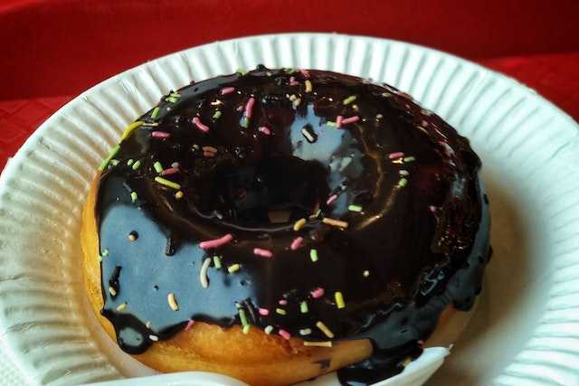

Donuts
Ingredients
- 1¼ cups milk
- 2¼ teaspoons (one package) active dry yeast
- 2 eggs
- 1 egg
- 8 tablespoons (1 stick) butter, melted and cooled
- ¼ cup granulated sugar
- 1 teaspoon salt
- 4¼ cups all-purpose flour, plus more for rolling out the dough
- 2 quarts neutral oil, for frying, plus more for the bowl.
Instructions
- Heat the milk until it is warm but not hot, about 90 degrees. In a large bowl, combine it with the yeast. Stir lightly, and let sit until the mixture is foamy, about 5 minutes.
- Using an electric mixer or a stand mixer fitted with a dough hook, beat the eggs, butter, sugar and salt into the yeast mixture. Add half of the flour (2 cups plus 2 tablespoons), and mix until combined, then mix in the rest of the flour until the dough pulls away from the sides of the bowl. Add more flour, about 2 tablespoons at a time, if the dough is too wet. If you’re using an electric mixer, the dough will probably become too thick to beat; when it does, transfer it to a floured surface, and gently knead it until smooth. Grease a large bowl with a little oil. Transfer the dough to the bowl, and cover. Let rise at room temperature until it doubles in size, about 1 hour.
- Turn the dough out onto a well-floured surface, and roll it to ½-inch thickness. Cut out the doughnuts with a doughnut cutter, concentric cookie cutters or a drinking glass and a shot glass (the larger one should be about 3 inches in diameter), flouring the cutters as you go. Reserve the doughnut holes. If you’re making filled doughnuts, don’t cut out the middle. Knead any scraps together, being careful not to overwork, and let rest for a few minutes before repeating the process.
- Put the doughnuts on two floured baking sheets so that there is plenty of room between each one. Cover with a kitchen towel, and let rise in a warm place until they are slightly puffed up and delicate, about 45 minutes. If your kitchen isn’t warm, heat the oven to 200 at the beginning of this step, then turn off the heat, put the baking sheets in the oven and leave the door ajar.
- About 15 minutes before the doughnuts are done rising, put the oil in a heavy-bottomed pot or Dutch oven over medium heat, and heat it to 375. Meanwhile, line cooling racks, baking sheets or plates with paper towels.
- Roll out the dough into a thin sheet and cut out round disc shapes for empanadas (use round molds or a small plate). You can also make small individual balls with the dough and roll out each individual ball to a round shape (doesn’t need to be perfectly round) – if you have a tortilla press you can use it to flatten the dough balls.
- Carefully add the doughnuts to the oil, a few at a time. If they’re too delicate to pick up with your fingers (they may be this way only if you rose them in the oven), use a metal spatula to pick them up and slide them into the oil. It’s O.K. if they deflate a bit; they’ll puff back up as they fry. When the bottoms are deep golden, after 45 seconds to a minute, use a slotted spoon to flip; cook until they’re deep golden all over. Doughnut holes cook faster. Transfer the doughnuts to the prepared plates or racks, and repeat with the rest of the dough, adjusting the heat as needed to keep the oil at 375. Glaze or fill as follows, and serve as soon as possible.